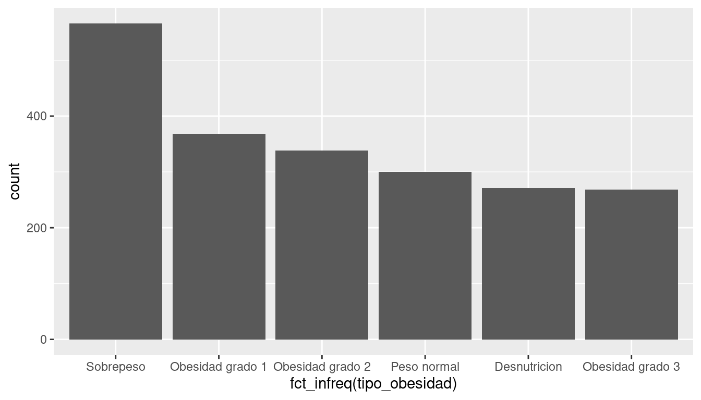
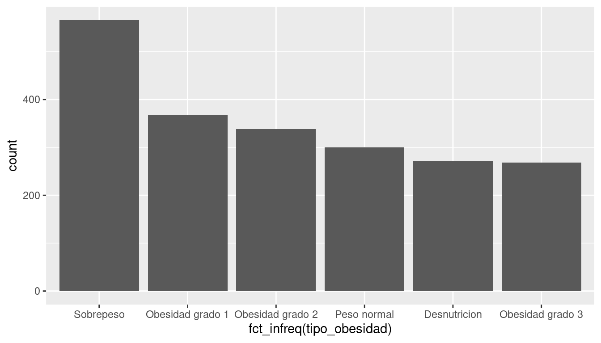
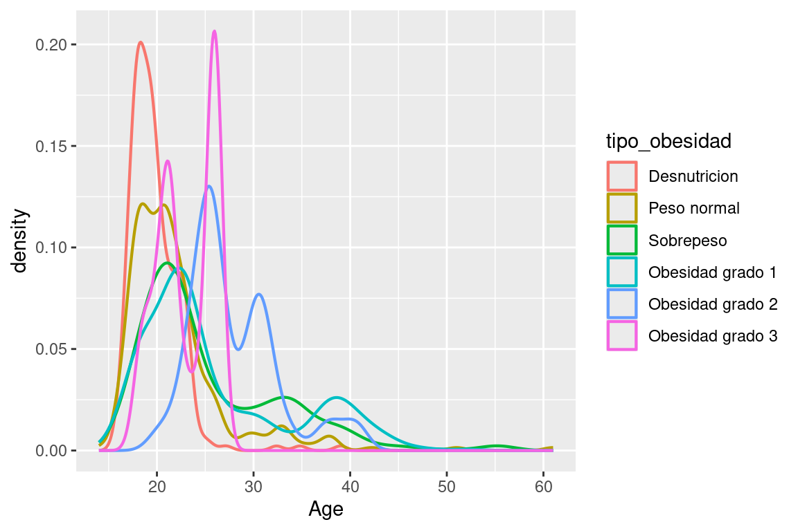

ggplot(obesity, aes(x = fct_infreq(tipo_obesidad))) +
geom_bar()
Visualizar barras de tipo de obesidad en orden descendente
ggplot(obesity, aes(x = fct_infreq(tipo_obesidad))) +
geom_bar()
Diagrama de densidad que relaciona la edad con el tipo de obesidad
ggplot(obesity, aes(x = Age, color = tipo_obesidad)) +
geom_density(linewidth = 0.75)
Diagrama de densidad que relaciona la edad con el tipo de obesidad y una transparencia de 0.5
ggplot(obesity, aes(x = Age, color = tipo_obesidad,
fill = tipo_obesidad)) +
geom_density(alpha = 0.5)
# Los nombres de las variables y otros se separan con guiones bajos como en python, no con guiones medios como en lispCambiar el nombre de las variables
obesity_renamed <- obesity |>
rename(
peso = Weight,
altura = Height
)
obesity_renamed[1:4,]# A tibble: 4 × 19
Gender Age altura peso family_history_with_…¹ FAVC FCVC NCP CAEC SMOKE
<chr> <dbl> <dbl> <dbl> <chr> <chr> <dbl> <dbl> <chr> <chr>
1 Female 21 1.62 64 yes no 2 3 Some… no
2 Female 21 1.52 56 yes no 3 3 Some… yes
3 Male 23 1.8 77 yes no 2 3 Some… no
4 Male 27 1.8 87 no no 3 3 Some… no
# ℹ abbreviated name: ¹family_history_with_overweight
# ℹ 9 more variables: CH2O <dbl>, SCC <chr>, FAF <dbl>, TUE <dbl>, CALC <chr>,
# MTRANS <chr>, NObeyesdad <chr>, imc <dbl>, tipo_obesidad <chr>Reposicionar imc y tipo de obesidad al inicio de la tabla
obesity_relocated <- obesity |>
relocate(imc, tipo_obesidad)
obesity_relocated[1:4,] # produce:# A tibble: 4 × 19
imc tipo_obesidad Gender Age Height Weight family_history_with_ove…¹ FAVC
<dbl> <chr> <chr> <dbl> <dbl> <dbl> <chr> <chr>
1 24.4 Peso normal Female 21 1.62 64 yes no
2 24.2 Peso normal Female 21 1.52 56 yes no
3 23.8 Peso normal Male 23 1.8 77 yes no
4 26.9 Sobrepesso Male 27 1.8 87 no no
# ℹ abbreviated name: ¹family_history_with_overweight
# ℹ 11 more variables: FCVC <dbl>, NCP <dbl>, CAEC <chr>, SMOKE <chr>,
# CH2O <dbl>, SCC <chr>, FAF <dbl>, TUE <dbl>, CALC <chr>, MTRANS <chr>,
# NObeyesdad <chr>Agrupar por tipo de obesidad y género y resumir por imc y edad
obesity |>
group_by(tipo_obesidad, Gender) |>
summarise(
med_imc = median(imc, na.rm = TRUE),
med_age = median(Age, na.rm = TRUE),
.groups = "drop"
) # produce:# A tibble: 12 × 4
tipo_obesidad Gender med_imc med_age
<chr> <chr> <dbl> <dbl>
1 Desnutrición Female 17.5 19.9
2 Desnutrición Male 17.6 18
3 Obesidad grado 1 Female 31.9 23
4 Obesidad grado 1 Male 32.7 22.9
5 Obesidad grado 2 Female 39.0 25.9
6 Obesidad grado 2 Male 36.5 27.6
7 Obesidad grado 3 Female 42.8 22.8
8 Obesidad grado 3 Male 49.5 18
9 Peso normal Female 22.0 21
10 Peso normal Male 22.5 21
11 Sobrepesso Female 26.7 22.8
12 Sobrepesso Male 27.2 22.7# Los nombres usados antes de "<-" y en mutate deben tener solo letras minúsculas, numeros y se separa palabras con guiones bajos "_"Los operadores siempre van con espacios menos el signo de potencia
z <- (2 + 4)^2 / 12 # Estilo para nombres de archivos:
# 1. Evitar espacios, símbolos y caracteres especiales.
# 2. Los nombres deben describir lo que hay en el archivo
# 3. Los nombres deben funcionar bien con el orden predeterminado,
# incluso puede comenzar con números para que se coloquen en el orden
# correcto. Ejemplo:
# - Mal:
#alternative model.R
#code for exploratory analysis.r
#finalreport.qmd
#FinalReport.qmd
#fig 1.png
#Figure_02.png
#model_first_try.R
#run-first.r
#temp.txt
# Bien:
#01-load-data.R
#02-exploratory-analysis.R
#03-model-approach-1.R
#04-model-approach-2.R
#fig-01.png
#fig-02.png
#report-2022-03-20.qmd
#report-2022-04-02.qmd
#report-draft-notes.txtConocer el directorio actual de trabajo
getwd() # produce:[1] "/cloud/project/r4ds-progreso/obesity-latin/analysis"Cambiar el tipo de la variable género de character a factor
obesity_new_types <- obesity |>
mutate(
Gender = factor(Gender)
)
obesity_new_types[1:4,] # A tibble: 4 × 19
Gender Age Height Weight family_history_with_overw…¹ FAVC FCVC NCP CAEC
<fct> <dbl> <dbl> <dbl> <chr> <chr> <dbl> <dbl> <chr>
1 Female 21 1.62 64 yes no 2 3 Some…
2 Female 21 1.52 56 yes no 3 3 Some…
3 Male 23 1.8 77 yes no 2 3 Some…
4 Male 27 1.8 87 no no 3 3 Some…
# ℹ abbreviated name: ¹family_history_with_overweight
# ℹ 10 more variables: SMOKE <chr>, CH2O <dbl>, SCC <chr>, FAF <dbl>,
# TUE <dbl>, CALC <chr>, MTRANS <chr>, NObeyesdad <chr>, imc <dbl>,
# tipo_obesidad <chr>Escribir una tabla en un archivo csv
getwd() # produce:[1] "/cloud/project/r4ds-progreso/obesity-latin/analysis"write_csv(obesity, "../data/my_obesity2.csv")Cambiar el tipo de la variable género
obesity_new_types <- obesity |>
mutate(
Gender = factor(Gender)
)
obesity_new_types[1:4,]# A tibble: 4 × 19
Gender Age Height Weight family_history_with_overw…¹ FAVC FCVC NCP CAEC
<fct> <dbl> <dbl> <dbl> <chr> <chr> <dbl> <dbl> <chr>
1 Female 21 1.62 64 yes no 2 3 Some…
2 Female 21 1.52 56 yes no 3 3 Some…
3 Male 23 1.8 77 yes no 2 3 Some…
4 Male 27 1.8 87 no no 3 3 Some…
# ℹ abbreviated name: ¹family_history_with_overweight
# ℹ 10 more variables: SMOKE <chr>, CH2O <dbl>, SCC <chr>, FAF <dbl>,
# TUE <dbl>, CALC <chr>, MTRANS <chr>, NObeyesdad <chr>, imc <dbl>,
# tipo_obesidad <chr>